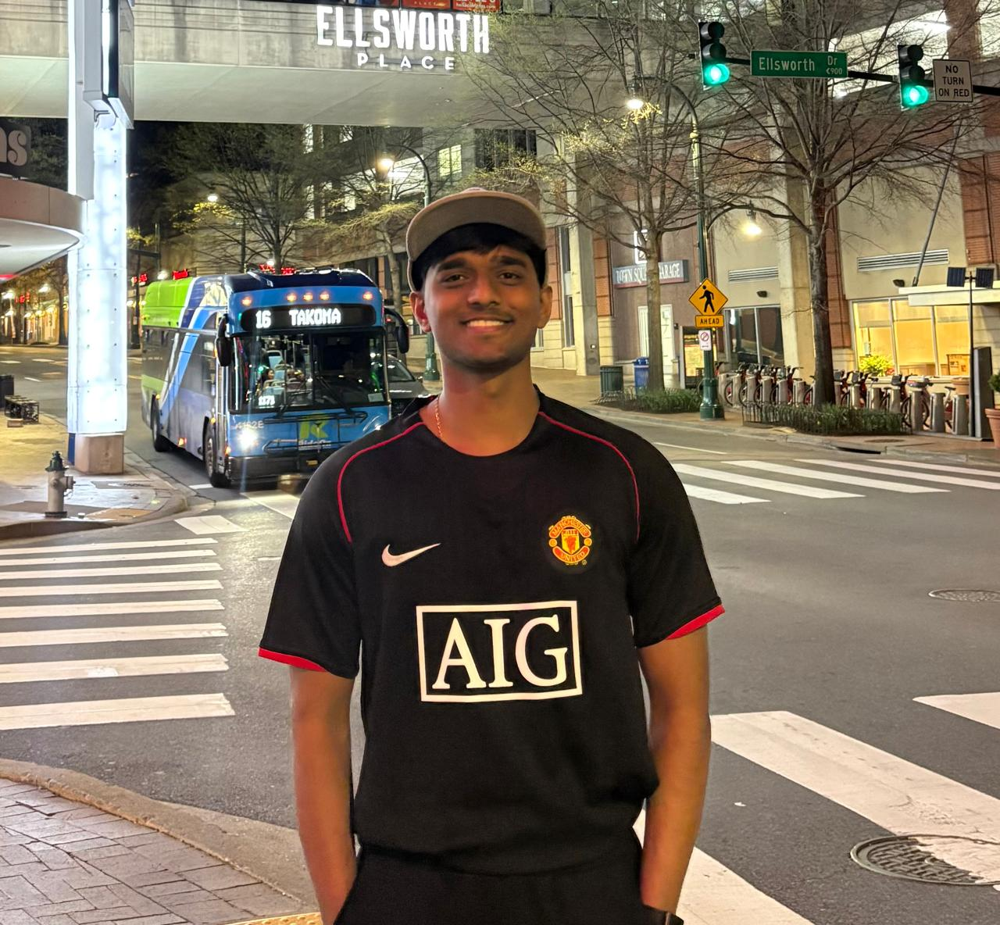

I build |
M.S. Data Science @ University of Maryland. I architect intelligent systems: fraud detection engines, LLM agents, autonomous code reviewers, and financial research assistants.

I'm a Machine Learning Engineer pursuing my M.S. in Data Science at the University of Maryland. My focus is on building production-grade intelligent systems: not just research prototypes, but systems with real architecture decisions, real trade-offs, and real impact.
From fine-tuning LLMs with LoRA adapters to architecting multi-agent workflows with LangGraph, I obsess over the gap between a model that works in a notebook and a system that works in production.
University of Maryland
Aug 2025 – Present · College Park, MD
Vellore Institute of Technology
Sep 2021 – May 2025 · Tamil Nadu, India
Bengaluru, India · Business Intelligence Team
Bengaluru, India
A production-grade real-time fraud detection engine trained on 590,540 transactions. Uses temporal splits (no leakage), LightGBM with class weighting, and a FastAPI scoring endpoint returning fraud probability in milliseconds. Catches 71.8% of fraud, preventing an estimated $330K in losses per test period.
Fine-tuned Mistral-7B with LoRA adapters (4-bit quantized) to simultaneously classify 27 customer intent categories and generate on-brand support responses in one inference pass. Achieves 94.7% macro F1 across all intent classes. Turns a 2-hour ticket triage queue into sub-second automated responses.
An autonomous AI agent that reviews GitHub PRs in under 60 seconds, replacing 2 hours of senior engineer review time. Unlike static linters, it dynamically fetches diffs, runs static analysis, traces call-site dependencies, and posts structured review comments with severity ratings, adapting its depth to the PR's complexity.
An autonomous financial research agent that compresses equity research from hours to minutes. A LangGraph ReAct loop gathers company profiles, news, and financials, adapting its path dynamically. Features pgvector memory to reuse prior research, human-in-the-loop validation checkpoints, and full LangSmith observability for every tool call.
An intelligent log triage and incident response system for high-volume infrastructure alerts. An XGBoost pre-classifier filters noise, routing only MEDIUM/HIGH severity logs to a LangGraph agent that autonomously traces root causes across services and escalates with a full reasoning trace, dramatically reducing alert fatigue.
Combines regex rules, SentenceTransformer embeddings + Logistic Regression, and a Groq-hosted LLM to classify heterogeneous application logs. Deployed as a FastAPI service with CSV upload endpoint.
NSL-KDD intrusion detection with Mutual Information, F-score, and Hippopotamus Optimization for feature selection. 94% accuracy with Scikit-learn and TensorFlow. IEEE Published →
RAG-powered financial assistant using Firecrawl for web scraping, Hugging Face embeddings with ChromaDB, and LangChain + Gemini for context-aware market analysis.
I'm always open to discussing ML engineering roles, research collaborations, or interesting projects. My inbox is open.